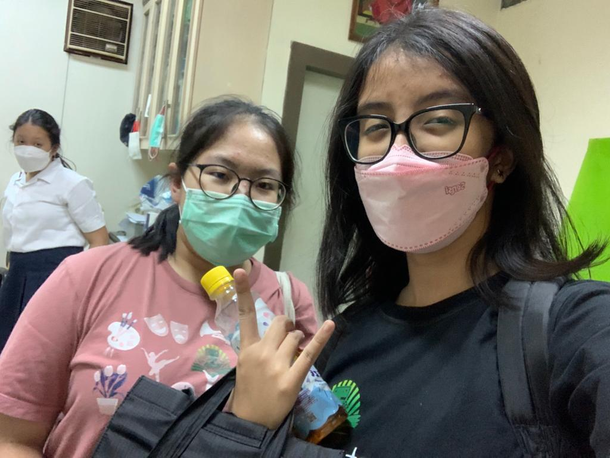
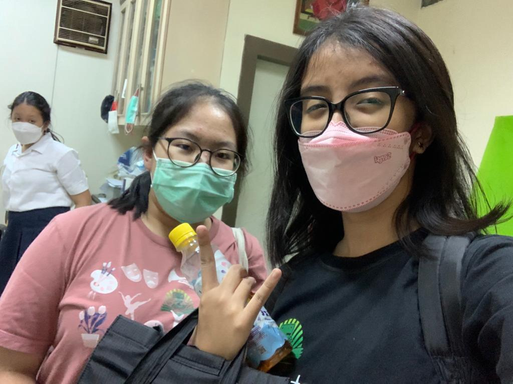

ABSTRAK |
|

Penelitian ini bertujuan untuk mengurangi jumlah sampah plastik dengan mengganti sendok plastik dengan sendok biodegradable. Bahan plastik merupakan bahan non-biodegradable yang berarti limbah yang tidak bisa/memerlukan waktu yang sangat lama untuk terurai. Sampah plastik bisa menjadi polutan di laut, merusak ekosistem laut, dan mengganggu kehidupan hewan-hewan di sana. Salah satu cara untuk mengurangi sampah plastik adalah dengan sendok biodegradable. Menjaga lingkungan dapat dilakukan dengan alat yang ada di sekitar kita, contohnya dengan menggunakan sendok biodegradable. Dengan adanya sendok biodegradable, kita bisa mengurangi sampah plastik di Jakarta.
Karya ilmiah ini dibuat dengan menggunakan teknik eksperimen/percobaan. Dalam penelitian ilmiah, eksperimen perlu dilakukan dan dari eksperimen yang dilakukan, akan mendapatkan fakta/informasi mengenai subjek yang diteliti. Sendok biodegradable ini mudah dibuat dan bahan dan alatnya pun mudah untuk ditemukan. Bahan utama sendok biodegradable adalah tepung beras, tepung terigu, serta tepung sorgum yang akan dicampur dengan air untuk menjadi adonan. Sendok ini tidak memiliki rasa yang dapat mengubah citra rasa makanan yang kita makan dengan sendok tersebut. Peneliti juga menggunakan bahan tambahan bawang putih dan gula. Cara untuk membuat sendok biodegradable ini juga cukup mudah yaitu dengan memasukkan tepung sorgum, tepung gandum, dan tepung nasi ke dalam mangkuk dan menambahkan air, lalu mencampurkan adonan tersebut hingga tercampur dengan rata. Lalu, sendok dicetak dan dipanggang di dalam oven selama 30 menit dalam suhu 190 derajat Celsius. Setelah itu, sendok biodegradable dapat digunakan.
Pada percobaan pertama, peneliti gagal untuk membuat sendok karena peneliti membiarkan adonan selama seminggu sehingga adonan kering dan tidak bisa dibentuk. Percobaan kedua peneliti juga gagal karena peneliti hanya menggunakan tepung nasi. Seharusnya peneliti menggunakan tepung sorgum dan tepung gandum juga. Pada percobaan ketiga, peneliti menggunakan ketiga tepung yang diperlukan yaitu tepung sorgum, tepung gandum dan tepung nasi. Aspek yang memengaruhi hasil sendok biodegradable adalah tepung yang digunakan untuk membuat sendok serta jumlahnya, waktu panggang, dan jumlah air yang digunakan. Maka dari itu, harus diperhatikan aspek-aspek tersebut saat membuat sendok biodegradable.
ABSTRACT
This study aims to reduce the amount of plastic waste by replacing plastic spoons with biodegradable spoons. Plastic material is a non-biodegradable material which means waste that cannot/requires a very long time to decompose. Plastic waste can become a pollutant in the sea, damage marine ecosystems and disrupt the lives of animals there. One way to reduce plastic waste is with biodegradable spoons. Protecting the environment can be done with the tools around us, for example by using a biodegradable spoon. With biodegradable spoons, we can reduce plastic waste in Jakarta.
This scientific work was made using experimental techniques. In scientific research, experiments need to be carried out and from the experiments carried out, facts/information about the subject under study will be obtained. This biodegradable spoon is easy to make and the ingredients and tools are easy to find. The main ingredients for biodegradable spoons are rice flour, wheat flour, and sorghum flour which will be mixed with water to form a dough. This spoon has no taste that can change the taste of the food we eat with it. Researchers also use additional ingredients of garlic and sugar. The way to make this biodegradable spoon is also quite easy, namely by putting sorghum flour, wheat flour, and rice flour in a bowl and adding water, then mixing the mixture until it is well mixed. Then, the spoon is molded and baked in the oven for 30 minutes at 190 degree Celsius. After that, the biodegradable spoon can be used.
In the first experiment, the researcher failed to make a spoon because the researcher left the dough for a week so that the dough was dry and could not be shaped. The experiment of the two researchers also failed because the researchers only used rice flour. Researchers should use sorghum flour and wheat flour as well. In the third experiment, the researchers used the three necessary flours, namely sorghum flour, wheat flour and rice flour. Aspects that affect the yield of a biodegradable spoon are the flour used to make the spoon and the amount, baking time and amount of water used. Therefore, these aspects must be considered when making biodegradable spoons.
 
